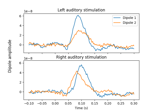

mne.Info#
- class mne.Info(*args, **kwargs)[source]#
Measurement information.
This data structure behaves like a dictionary. It contains all metadata that is available for a recording. However, its keys are restricted to those provided by the FIF format specification, so new entries should not be manually added.
Note
This class should not be instantiated directly via
mne.Info(...). Instead, usemne.create_info()to create measurement information from scratch.Warning
The only entries that should be manually changed by the user are:
info['bads'],info['description'],info['device_info'],info['proj_id'],info['proj_name'],info['dev_head_t'],info['experimenter'],info['helium_info'],info['line_freq'],info['temp'], andinfo['subject_info'].All other entries should be considered read-only, though they can be modified by various MNE-Python functions or methods (which have safeguards to ensure all fields remain in sync).
- Parameters:
- Attributes:
- acq_pars
str|None MEG system acquisition parameters. See
mne.AcqParserFIFfor details.- acq_stim
str|None MEG system stimulus parameters.
- bads
listofstr List of bad (noisy/broken) channels, by name. These channels will by default be ignored by many processing steps.
- ch_names
listofstr The names of the channels.
- chs
listofdict A list of channel information dictionaries, one per channel. See Notes for more information.
- command_line
str Contains the command and arguments used to create the source space (used for source estimation).
- comps
listofdict CTF software gradient compensation data. See Notes for more information.
- ctf_head_t
Transform|None The transformation from 4D/CTF head coordinates to Neuromag head coordinates. This is only present in 4D/CTF data.
- custom_ref_applied
int Whether a custom (=other than an average projector) reference has been applied to the EEG data. This flag is checked by some algorithms that require an average reference to be set.
- description
str|None String description of the recording.
- dev_ctf_t
Transform|None The transformation from device coordinates to 4D/CTF head coordinates. This is only present in 4D/CTF data.
- dev_head_t
Transform|None The device to head transformation.
- device_info
dict|None Information about the acquisition device. See Notes for details.
New in v0.19.
- dig
listofdict|None The Polhemus digitization data in head coordinates. See Notes for more information.
- events
listofdict Event list, sometimes extracted from the stim channels by Neuromag systems. In general this should not be used and
mne.find_events()should be used for event processing. See Notes for more information.- experimenter
str|None Name of the person that ran the experiment.
- file_id
dict|None The FIF globally unique ID. See Notes for more information.
- gantry_angle
float|None Tilt angle of the gantry in degrees.
- helium_info
dict|None Information about the device helium. See Notes for details.
New in v0.19.
- highpass
float Highpass corner frequency in Hertz. Zero indicates a DC recording.
- hpi_meas
listofdict HPI measurements that were taken at the start of the recording (e.g. coil frequencies). See Notes for details.
- hpi_results
listofdict Head position indicator (HPI) digitization points and fit information (e.g., the resulting transform). See Notes for details.
- hpi_subsystem
dict|None Information about the HPI subsystem that was used (e.g., event channel used for cHPI measurements). See Notes for details.
- kit_system_id
int Identifies the KIT system.
- line_freq
float|None Frequency of the power line in Hertz.
- lowpass
float Lowpass corner frequency in Hertz. It is automatically set to half the sampling rate if there is otherwise no low-pass applied to the data.
- maxshieldbool
True if active shielding (IAS) was active during recording.
- meas_date
datetime The time (UTC) of the recording.
Changed in version 0.20: This is stored as a
datetimeobject instead of a tuple of seconds/microseconds.- meas_file
str|None Raw measurement file (used for source estimation).
- meas_id
dict|None The ID assigned to this measurement by the acquisition system or during file conversion. Follows the same format as
file_id.- mri_file
str|None File containing the MRI to head transformation (used for source estimation).
- mri_head_t
dict|None Transformation from MRI to head coordinates (used for source estimation).
- mri_id
dict|None MRI unique ID (used for source estimation).
- nchan
int Number of channels.
- proc_history
listofdict The MaxFilter processing history. See Notes for details.
- proj_id
int|None ID number of the project the experiment belongs to.
- proj_name
str|None Name of the project the experiment belongs to.
- projs
listofProjection List of SSP operators that operate on the data. See
mne.Projectionfor details.- sfreq
float Sampling frequency in Hertz.
- subject_info
dict|None Information about the subject. See Notes for details.
- tempobject |
None Can be used to store temporary objects in an Info instance. It will not survive an I/O roundtrip.
New in v0.24.
- utc_offset
str UTC offset of related meas_date (sHH:MM).
New in v0.19.
- working_dir
str Working directory used when the source space was created (used for source estimation).
- xplotter_layout
str Layout of the Xplotter (Neuromag system only).
- acq_pars
Methods
__contains__(key,/)True if the dictionary has the specified key, else False.
__getitem__(key,/)Return self[key].
__iter__(/)Implement iter(self).
__len__(/)Return len(self).
anonymize([daysback,keep_his,verbose])Anonymize measurement information in place.
clear()copy()Copy the instance.
from_json_dict(data_dict)Reconstruct Info object from a dictionary.
fromkeys(iterable[,value])Create a new dictionary with keys from iterable and values set to value.
get(key[,default])Return the value for key if key is in the dictionary, else default.
get_channel_types([picks,unique,only_data_chs])Get a list of channel type for each channel.
Get a DigMontage from instance.
items()keys()(Re-)Normalize projection vectors after subselection.
plot_sensors([kind,ch_type,title,...])Plot sensor positions.
pop(key[,default])If the key is not found, return the default if given; otherwise, raise a KeyError.
popitem(/)Remove and return a (key, value) pair as a 2-tuple.
rename_channels(mapping[,allow_duplicates,...])Rename channels.
save(fname,*[,overwrite,verbose])Write measurement info in fif file.
set_channel_types(mapping,*[,...])Specify the sensor types of channels.
set_meas_date(meas_date)Set the measurement start date.
set_montage(montage[,match_case,...])Set EEG/sEEG/ECoG/DBS/fNIRS channel positions and digitization points.
setdefault(key[,default])Insert key with a value of default if key is not in the dictionary.
Convert Info to a JSON-serializable dictionary.
update([other])Update method using __setitem__().
values()See also
Notes
The following parameters have a nested structure.
chslist of dict:- calfloat
The calibration factor to bring the channels to physical units. Used in product with
rangeto scale the data read from disk.- ch_namestr
The channel name.
- coil_typeint
Coil type, e.g.
FIFFV_COIL_MEG.- coord_frameint
The coordinate frame used, e.g.
FIFFV_COORD_HEAD.- kindint
The kind of channel, e.g.
FIFFV_EEG_CH.- locarray, shape (12,)
Channel location information. The first three elements
[:3]always store the nominal channel position. The remaining 9 elements store different information based on the channel type:- MEG
Remaining 9 elements
[3:], contain the EX, EY, and EZ normal triplets (columns) of the coil rotation/orientation matrix.- EEG
Elements
[3:6]contain the reference channel position.- Eyetrack
Element
[3]contains information about which eye was tracked (-1 for left, 1 for right), and element[4]contains information about the axis of coordinate data (-1 for x-coordinate data, 1 for y-coordinate data).- Dipole
Elements
[3:6]contain dipole orientation information.
- lognoint
Logical channel number, conventions in the usage of this number vary.
- rangefloat
The hardware-oriented part of the calibration factor. This should be only applied to the continuous raw data. Used in product with
calto scale data read from disk.- scannoint
Scanning order number, starting from 1.
- unitint
The unit to use, e.g.
FIFF_UNIT_T_M.- unit_mulint
Unit multipliers, most commonly
FIFF_UNITM_NONE.
compslist of dict:- ctfkindint
CTF compensation grade.
- colcalsndarray
Column calibrations.
- matdict
A named matrix dictionary (with entries data, col_names, etc.) containing the compensation matrix.
- rowcalsndarray
Row calibrations.
- save_calibratedbool
Were the compensation data saved in calibrated form.
device_infodict:- typestr
Device type.
- modelstr
Device model.
- serialstr
Device serial.
- sitestr
Device site.
diglist of dict:- kindint
The kind of channel, e.g.
FIFFV_POINT_EEG,FIFFV_POINT_CARDINAL.- rarray, shape (3,)
3D position in m. and coord_frame.
- identint
Number specifying the identity of the point. e.g.
FIFFV_POINT_NASIONif kind isFIFFV_POINT_CARDINAL, or 42 if kind isFIFFV_POINT_EEG.- coord_frameint
The coordinate frame used, e.g.
FIFFV_COORD_HEAD.
eventslist of dict:- channelslist of int
Channel indices for the events.
- listndarray, shape (n_events * 3,)
Events in triplets as number of samples, before, after.
file_iddict:- versionint
FIF format version, i.e.
FIFFC_VERSION.- machidndarray, shape (2,)
Unique machine ID, usually derived from the MAC address.
- secsint
Time in seconds.
- usecsint
Time in microseconds.
helium_infodict:- he_level_rawfloat
Helium level (%) before position correction.
- helium_levelfloat
Helium level (%) after position correction.
- orig_file_guidstr
Original file GUID.
- meas_datedatetime.datetime | None
The helium level meas date.
Changed in version 1.8: This is stored as a
datetimeobject instead of a tuple of seconds/microseconds.
hpi_measlist of dict:- creatorstr
Program that did the measurement.
- sfreqfloat
Sample rate.
- nchanint
Number of channels used.
- naveint
Number of averages used.
- ncoilint
Number of coils used.
- first_sampint
First sample used.
- last_sampint
Last sample used.
- hpi_coilslist of dict
Coils, containing:
- number: int
Coil number
- epochndarray
Buffer containing one epoch and channel.
- slopesndarray, shape (n_channels,)
HPI data.
- corr_coeffndarray, shape (n_channels,)
HPI curve fit correlations.
- coil_freqfloat
HPI coil excitation frequency
hpi_resultslist of dict:- dig_pointslist
Digitization points (see
digdefinition) for the HPI coils.- orderndarray, shape (ncoil,)
The determined digitization order.
- usedndarray, shape (nused,)
The indices of the used coils.
- momentsndarray, shape (ncoil, 3)
The coil moments.
- goodnessndarray, shape (ncoil,)
The goodness of fits.
- good_limitfloat
The goodness of fit limit.
- dist_limitfloat
The distance limit.
- acceptint
Whether or not the fit was accepted.
- coord_transinstance of Transform
The resulting MEG<->head transformation.
hpi_subsystemdict:- ncoilint
The number of coils.
- event_channelstr
The event channel used to encode cHPI status (e.g., STI201).
- hpi_coilslist of ndarray
List of length
ncoil, each 4-element ndarray contains the event bits used on the event channel to indicate cHPI status (using the first element of these arrays is typically sufficient).
mri_iddict:- versionint
FIF format version, i.e.
FIFFC_VERSION.- machidndarray, shape (2,)
Unique machine ID, usually derived from the MAC address.
- secsint
Time in seconds.
- usecsint
Time in microseconds.
proc_historylist of dict:- block_iddict
See
idabove.- datendarray, shape (2,)
2-element tuple of seconds and microseconds.
- experimenterstr
Name of the person who ran the program.
- creatorstr
Program that did the processing.
- max_infodict
Maxwel filtering info, can contain:
- sss_infodict
SSS processing information.
- max_st
tSSS processing information.
- sss_ctcdict
Cross-talk processing information.
- sss_caldict
Fine-calibration information.
- smartshielddict
MaxShield information. This dictionary is (always?) empty, but its presence implies that MaxShield was used during acquisition.
subject_infodict:- idint
Integer subject identifier.
- his_idstr
String subject identifier.
- last_namestr
Last name.
- first_namestr
First name.
- middle_namestr
Middle name.
- birthdaydatetime.date
The subject birthday.
Changed in version 1.8: This is stored as a
dateobject instead of a tuple of seconds/microseconds.- sexint
Subject sex (0=unknown, 1=male, 2=female).
- handint
Handedness (1=right, 2=left, 3=ambidextrous).
- weightfloat
Weight in kilograms.
- heightfloat
Height in meters.
- __contains__(key, /)#
True if the dictionary has the specified key, else False.
- __getitem__(key, /)#
Return self[key].
- __iter__(/)#
Implement iter(self).
- __len__(/)#
Return len(self).
- anonymize(daysback=None, keep_his=False, verbose=None)[source]#
Anonymize measurement information in place.
- Parameters:
- daysback
int|None Number of days to subtract from all dates. If
None(default), the acquisition date,info['meas_date'], will be set toJanuary 1, 2000. This parameter is ignored ifinfo['meas_date']isNone(i.e., no acquisition date has been set).- keep_hisbool
If
True,his_idofsubject_infowill not be overwritten. Defaults toFalse.Warning
This could mean that
infois not fully anonymized. Use with caution.- verbosebool |
str|int|None Control verbosity of the logging output. If
None, use the default verbosity level. See the logging documentation andmne.verbose()for details. Should only be passed as a keyword argument.
- daysback
- Returns:
Notes
Removes potentially identifying information if it exists in
info. Specifically for each of the following we use:- meas_date, file_id, meas_id
A default value, or as specified by
daysback.
- subject_info
Default values, except for birthday which is adjusted to maintain the subject age.
- experimenter, proj_name, description
Default strings.
- utc_offset
None.
- proj_id
Zeros.
- proc_history
Dates use the
meas_datelogic, and experimenter a default string.
- helium_info, device_info
Dates use the
meas_datelogic, meta info uses defaults.
If
info['meas_date']isNone, it will remainNoneduring processing the above fields.Operates in place.
New in v0.13.0.
- clear() None. Remove all items from D.#
- property compensation_grade#
The current gradient compensation grade.
- classmethod from_json_dict(data_dict) Info[source]#
Reconstruct Info object from a dictionary.
- Parameters:
- data_dict
dict A dictionary representation of an Info object, typically created by the
to_json_dict()method.
- data_dict
- Returns:
InfoThe reconstructed Info object.
See also
to_json_dictConvert Info to dictionary.
Examples
>>> info = mne.create_info(['MEG1', 'MEG2'], 1000., ['mag', 'mag']) >>> info_dict = info.to_json_dict() >>> info_restored = mne.Info.from_json_dict(info_dict)
- classmethod fromkeys(iterable, value=None, /)#
Create a new dictionary with keys from iterable and values set to value.
- get(key, default=None, /)#
Return the value for key if key is in the dictionary, else default.
- get_channel_types(picks=None, unique=False, only_data_chs=False)[source]#
Get a list of channel type for each channel.
- Parameters:
- picks
str| array_like |slice|None Channels to include. Slices and lists of integers will be interpreted as channel indices. In lists, channel type strings (e.g.,
['meg', 'eeg']) will pick channels of those types, channel name strings (e.g.,['MEG0111', 'MEG2623']will pick the given channels. Can also be the string values'all'to pick all channels, or'data'to pick data channels. None (default) will pick all channels. Note that channels ininfo['bads']will be included if their names or indices are explicitly provided.- uniquebool
Whether to return only unique channel types. Default is
False.- only_data_chsbool
Whether to ignore non-data channels. Default is
False.
- picks
- Returns:
- channel_types
list The channel types.
- channel_types
- get_montage()[source]#
Get a DigMontage from instance.
- Returns:
- montage
None|DigMontage A copy of the channel positions, if available, otherwise
None.
- montage
- items() a set-like object providing a view on D's items#
- keys() a set-like object providing a view on D's keys#
- normalize_proj()[source]#
(Re-)Normalize projection vectors after subselection.
Applying projection after sub-selecting a set of channels that were originally used to compute the original projection vectors can be dangerous (e.g., if few channels remain, most power was in channels that are no longer picked, etc.). By default, mne will emit a warning when this is done.
This function will re-normalize projectors to use only the remaining channels, thus avoiding that warning. Only use this function if youre confident that the projection vectors still adequately capture the original signal of interest.
Examples using
normalize_proj:Computing source timecourses with an XFit-like multi-dipole model
Computing source timecourses with an XFit-like multi-dipole model
- plot_sensors(kind='topomap', ch_type=None, title=None, show_names=False, ch_groups=None, to_sphere=True, axes=None, block=False, show=True, sphere=None, *, verbose=None)[source]#
Plot sensor positions.
- Parameters:
- kind
str Whether to plot the sensors as 3d, topomap or as an interactive sensor selection dialog. Available options topomap, 3d, select. If select, a set of channels can be selected interactively by using lasso selector or clicking while holding control key. The selected channels are returned along with the figure instance. Defaults to topomap.
- ch_type
None|str The channel type to plot. Available options
'mag','grad','eeg','seeg','dbs','ecog','all'. If'all', all the available mag, grad, eeg, seeg, dbs, and ecog channels are plotted. If None (default), then channels are chosen in the order given above.- title
str|None Title for the figure. If None (default), equals to
'Sensor positions (%s)' % ch_type.- show_namesbool |
arrayofstr Whether to display all channel names. If an array, only the channel names in the array are shown. Defaults to False.
- ch_groupsposition |
arrayof shape (n_ch_groups, n_picks) |None Channel groups for coloring the sensors. If None (default), default coloring scheme is used. If position, the sensors are divided into 8 regions. See
orderkwarg ofmne.viz.plot_raw(). If array, the channels are divided by picks given in the array.New in v0.13.0.
- to_spherebool
Whether to project the 3d locations to a sphere. When False, the sensor array appears similar as to looking downwards straight above the subjects head. Has no effect when kind=3d. Defaults to True.
New in v0.14.0.
- axesinstance of
Axes| instance ofAxes3D|None Axes to draw the sensors to. If
kind='3d', axes must be an instance of Axes3D. If None (default), a new axes will be created.New in v0.13.0.
- blockbool
Whether to halt program execution until the figure is closed. Defaults to False.
New in v0.13.0.
- showbool
Show figure if True. Defaults to True.
- sphere
float| array_like offloat| instance ofConductorModel|str|listofstr|None The sphere parameters to use for the head outline. Can be array-like of shape (4,) to give the X/Y/Z origin and radius in meters, or a single float to give just the radius (origin assumed 0, 0, 0). Can also be an instance of a spherical
ConductorModelto use the origin and radius from that object. Can also be astr, in which case:'auto': the sphere is fit to external digitization points first, and to external + EEG digitization points if the former fails.'eeglab': the head circle is defined by EEG electrodes'Fpz','Oz','T7', and'T8'(if'Fpz'is not present, it will be approximated from the coordinates of'Oz').'extra': the sphere is fit to external digitization points.'eeg': the sphere is fit to EEG digitization points.'cardinal': the sphere is fit to cardinal digitization points.'hpi': the sphere is fit to HPI coil digitization points.
Can also be a list of
str, in which case the sphere is fit to the specified digitization points, which can be any combination of'extra','eeg','cardinal', and'hpi', as specified above.None(the default) is equivalent to'auto'when enough extra digitization points are available, and (0, 0, 0, 0.095) otherwise.New in v0.20.
Changed in version 1.1: Added
'eeglab'option.Changed in version 1.11: Added
'extra','eeg','cardinal','hpi'and list ofstroptions.- verbosebool |
str|int|None Control verbosity of the logging output. If
None, use the default verbosity level. See the logging documentation andmne.verbose()for details. Should only be passed as a keyword argument.
- kind
- Returns:
See also
Notes
This function plots the sensor locations from the info structure using matplotlib. For drawing the sensors using PyVista see
mne.viz.plot_alignment().New in v0.12.0.
- pop(key, default=<unrepresentable>, /)#
If the key is not found, return the default if given; otherwise, raise a KeyError.
- popitem(/)#
Remove and return a (key, value) pair as a 2-tuple.
Pairs are returned in LIFO (last-in, first-out) order. Raises KeyError if the dict is empty.
- rename_channels(mapping, allow_duplicates=False, *, on_missing='raise', verbose=None)[source]#
Rename channels.
- Parameters:
- mapping
dict|callable() A dictionary mapping the old channel to a new channel name e.g.
{'EEG061' : 'EEG161'}. Can also be a callable function that takes and returns a string.Changed in version 0.10.0: Support for a callable function.
- allow_duplicatesbool
If True (default False), allow duplicates, which will automatically be renamed with
-Nat the end.New in v0.22.0.
- on_missingraise | warn | ignore
Can be
'raise'(default) to raise an error,'warn'to emit a warning, or'ignore'to ignore when entries in ch_names are not present in the raw instance.New in v0.23.0.
New in v1.11.0.
- verbosebool |
str|int|None Control verbosity of the logging output. If
None, use the default verbosity level. See the logging documentation andmne.verbose()for details. Should only be passed as a keyword argument.
- mapping
- Returns:
Notes
New in v0.9.0.
- save(fname, *, overwrite=False, verbose=None)[source]#
Write measurement info in fif file.
- Parameters:
- fnamepath-like
The name of the file. Should end by
'-info.fif'.- overwritebool
If True (default False), overwrite the destination file if it exists.
New in v1.10.
- verbosebool |
str|int|None Control verbosity of the logging output. If
None, use the default verbosity level. See the logging documentation andmne.verbose()for details. Should only be passed as a keyword argument.
See also
- set_channel_types(mapping, *, on_unit_change='warn', verbose=None)[source]#
Specify the sensor types of channels.
- Parameters:
- mapping
dict A dictionary mapping channel names to sensor types, e.g.,
{'EEG061': 'eog'}.- on_unit_change
'raise'|'warn'|'ignore' What to do if the measurement unit of a channel is changed automatically to match the new sensor type.
New in v1.4.
- verbosebool |
str|int|None Control verbosity of the logging output. If
None, use the default verbosity level. See the logging documentation andmne.verbose()for details. Should only be passed as a keyword argument.
- mapping
- Returns:
Notes
The following sensor types are accepted:
bio, chpi, csd, dbs, dipole, ecg, ecog, eeg, emg, eog, exci, eyegaze, fnirs_cw_amplitude, fnirs_fd_ac_amplitude, fnirs_fd_phase, fnirs_od, gof, gsr, hbo, hbr, ias, misc, pupil, ref_meg, resp, seeg, stim, syst, temperature.
When working with eye-tracking data, see
mne.preprocessing.eyetracking.set_channel_types_eyetrack().New in v0.9.0.
- set_meas_date(meas_date)[source]#
Set the measurement start date.
- Parameters:
- meas_date
datetime|float|tuple|None The new measurement date. If datetime object, it must be timezone-aware and in UTC. A tuple of (seconds, microseconds) or float (alias for
(meas_date, 0)) can also be passed and a datetime object will be automatically created. If None, will remove the time reference.
- meas_date
- Returns:
See also
Notes
If you want to remove all time references in the file, call
mne.io.anonymize_info(inst.info)after callinginst.set_meas_date(None).New in v0.20.
- set_montage(montage, match_case=True, match_alias=False, on_missing='raise', verbose=None)[source]#
Set EEG/sEEG/ECoG/DBS/fNIRS channel positions and digitization points.
- Parameters:
- montage
None|str|DigMontage A montage containing channel positions. If a string or
DigMontageis specified, the existing channel information will be updated with the channel positions from the montage. Valid strings are the names of the built-in montages that ship with MNE-Python; you can list those viamne.channels.get_builtin_montages(). IfNone(default), the channel positions will be removed from theInfo.- match_casebool
If True (default), channel name matching will be case sensitive.
New in v0.20.
- match_aliasbool |
dict Whether to use a lookup table to match unrecognized channel location names to their known aliases. If True, uses the mapping in
mne.io.constants.CHANNEL_LOC_ALIASES. If adictis passed, it will be used instead, and should map from non-standard channel names to names in the specifiedmontage. Default isFalse.New in v0.23.
- on_missingraise | warn | ignore
Can be
'raise'(default) to raise an error,'warn'to emit a warning, or'ignore'to ignore when channels have missing coordinates.New in v0.20.1.
- verbosebool |
str|int|None Control verbosity of the logging output. If
None, use the default verbosity level. See the logging documentation andmne.verbose()for details. Should only be passed as a keyword argument.
- montage
- Returns:
See also
Notes
Warning
Only EEG/sEEG/ECoG/DBS/fNIRS channels can have their positions set using a montage. Other channel types (e.g., MEG channels) should have their positions defined properly using their data reading functions.
Warning
Applying a montage will only set locations of channels that exist at the time it is applied. This means when re-referencing make sure to apply the montage only after calling
mne.add_reference_channels()Examples using
set_montage:
- setdefault(key, default=None, /)#
Insert key with a value of default if key is not in the dictionary.
Return the value for key if key is in the dictionary, else default.
- to_json_dict() dict[source]#
Convert Info to a JSON-serializable dictionary.
This method converts the Info object to a standard Python dictionary containing only JSON-serializable types (dict, list, str, int, float, bool, None). Numpy arrays are converted to nested lists, and datetime objects to ISO format strings.
- Returns:
dictA JSON-serializable dictionary representation of the Info object.
See also
from_json_dictReconstruct Info object from dictionary.
Notes
This method is useful for serializing Info objects to JSON or other formats that dont support numpy arrays or custom objects.
Examples
>>> info = mne.create_info(['MEG1', 'MEG2'], 1000., ['mag', 'mag']) >>> info_dict = info.to_json_dict() >>> import json >>> json_str = json.dumps(info_dict) # Save to JSON
- values() an object providing a view on D's values#

Examples using mne.Info#


Motor imagery decoding from EEG data using the Common Spatial Pattern (CSP)

Decoding in time-frequency space using Common Spatial Patterns (CSP)

Continuous Target Decoding with SPoC

Decoding sensor space data with generalization across time and conditions

Analysis of evoked response using ICA and PCA reduction techniques


Linear classifier on sensor data with plot patterns and filters

Compute spatial filters with Spatio-Spectral Decomposition (SSD)


Compute MNE-dSPM inverse solution on single epochs


Compute source level time-frequency timecourses using a DICS beamformer


Compute evoked ERS source power using DICS, LCMV beamformer, and dSPM

Compute a sparse inverse solution using the Gamma-MAP empirical Bayesian method

Compute sparse inverse solution with mixed norm: MxNE and irMxNE

Compute MNE inverse solution on evoked data with a mixed source space

Compute source power estimate by projecting the covariance with MNE
Computing source timecourses with an XFit-like multi-dipole model

Plot point-spread functions (PSFs) and cross-talk functions (CTFs)
Compute cross-talk functions for LCMV beamformers
Plot point-spread functions (PSFs) for a volume

Compute spatial resolution metrics in source space

Compute spatial resolution metrics to compare MEG with EEG+MEG


Using contralateral referencing for EEG

Cortical Signal Suppression (CSS) for removal of cortical signals

Define target events based on time lag, plot evoked response


Automated epochs metadata generation with variable time windows
Principal Component Analysis - Optimal Basis Sets (PCA-OBS) removing cardiac artefact


Annotate movement artifacts and reestimate dev_head_t


Permutation F-test on sensor data with 1D cluster level


Permutation T-test on sensor data
Compute a cross-spectral density (CSD) matrix

Compute Power Spectral Density of inverse solution from single epochs

Compute power and phase lock in label of the source space

Compute source power spectral density (PSD) in a label

Compute source power spectral density (PSD) of VectorView and OPM data

Compute induced power in the source space with dSPM


Time-frequency on simulated data (Multitaper vs. Morlet vs. Stockwell vs. Hilbert)
How to convert 3D electrode positions to a 2D image


Plot single trial activity, grouped by ROI and sorted by RT


Using an automated approach to coregistration

EEG forward operator with a template MRI


Source localization with equivalent current dipole (ECD) fit

Source localization with MNE, dSPM, sLORETA, and eLORETA

The role of dipole orientations in distributed source localization

Source reconstruction using an LCMV beamformer

EEG source localization given electrode locations on an MRI


Working with CTF data: the Brainstorm auditory dataset


Signal-space separation (SSS) and Maxwell filtering

Preprocessing functional near-infrared spectroscopy (fNIRS) data

Preprocessing optically pumped magnetometer (OPM) MEG data


Visualising statistical significance thresholds on EEG data

Non-parametric 1 sample cluster statistic on single trial power

Non-parametric between conditions cluster statistic on single trial power

Mass-univariate twoway repeated measures ANOVA on single trial power

Spatiotemporal permutation F-test on full sensor data

Permutation t-test on source data with spatio-temporal clustering

Repeated measures ANOVA on source data with spatio-temporal clustering


Frequency-tagging: Basic analysis of an SSVEP/vSSR dataset
Make figures more publication ready